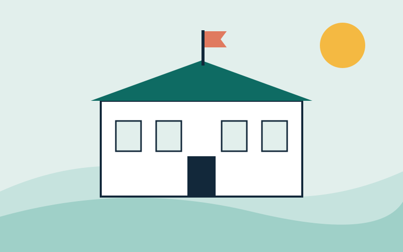

Why this matters for your learning
Stress, bullying, worry, and low mood can make it hard to focus, sleep, and go to class. Getting support early helps you keep learning. This is part of SDG 4: Quality Education.
How to ask for help at school
- Pick one person you trust: a teacher, adviser, guidance counselor, or school nurse.
- Say it simply: “I have been feeling overwhelmed and I need someone to talk to.”
- Ask what is private and what must be shared to keep you safe.
- If your school has no counselor, use Find help or call DepEd 33733 if you are a basic education student.
Walang masama humingi ng tulong. (There is nothing wrong with asking for help.)

In danger right now? Call 911. For emotional crisis or suicidal thoughts, call 1553 (toll-free). See all crisis numbers.
KalingaPH shares general information. It does not diagnose or replace care from a licensed professional.